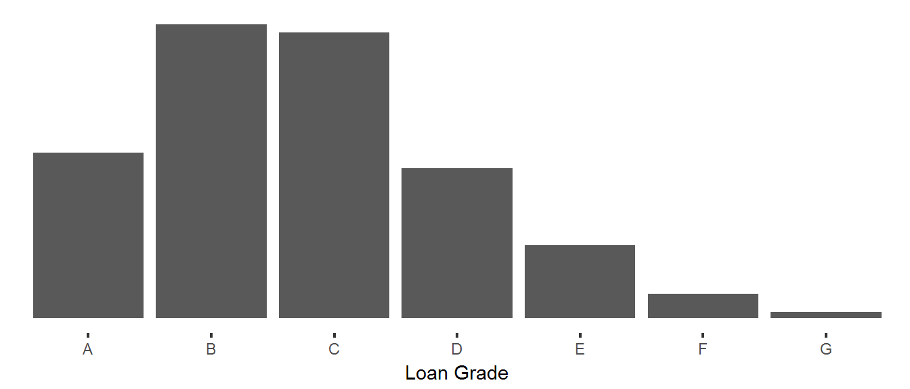

To start off, this analysis makes a few assumptions about how to classify loans.
Current and loans in the grace period are classified as current (A) and all other loans have been classified as defaulted (B). Some of those late loans will be made current it’s not a likely action. Contrarily, some of the loans in the grace period will go into default.
No filters have been applied to the dataset. All loans, including those which not yet matured, are included in the data. While this may be useful for data about originations, it will require consideration when interpreting default rates.
| Grade | Total | Proportion |
|---|---|---|
| A | 219,054 | 0.17 |
| B | 389,065 | 0.29 |
| C | 378,059 | 0.29 |
| D | 198,732 | 0.15 |
| E | 96,514 | 0.07 |
| F | 32,383 | 0.02 |
| G | 8,040 | 0.01 |

There are 1,321,847 loans in the dataset and the median loan grade level is C. We can further describe this distribution using skewness and kurtosis. From the table we can say intuitively that it is skewed towards the lower loan grades and tat the lower grade tail is fatter than the higher grade tail. This is inherently true beacause the max grade is A and a tail with values greater than A cannot exist.
Kurtosis is a description of the shape or peakedness of the curve. The kurtosis score for this distribution is 0.071596. For comparison, the normal distribution has a score of 3.0. We can interpret the comparison to say our issued loan distribution produces fewer and less extreme outliers than the normal distribution. Again, this makes sense intuitively because there are only 7 possible grades. This poses an upper and lower constraint on the loans effectively eliminating extreme outliers.
| Year | Count |
|---|---|
| 2011 | 42,535 |
| 2013 | 188,181 |
| 2014 | 235,629 |
| 2015 | 421,095 |
| 2016 | 434,407 |
LC was founded in 2007 so clearly they have not pulished data from their entire history. The first 4 years of data have been excluded from the dataset. Of the published data, the number of loans issued has grown significantly since 2011. In fact the first year growth rate was 442%. Growth has leveled off since 2015 to only 3%. The CAGR from 2011 to 2016 is 59%.
QUESTION: Why has growth slowed in the past year?
| grade | 2011 | 2013 | 2014 | 2015 | 2016 |
|---|---|---|---|---|---|
| A | 0.24 | 0.15 | 0.15 | 0.17 | 0.16 |
| B | 0.29 | 0.33 | 0.26 | 0.28 | 0.31 |
| C | 0.21 | 0.27 | 0.28 | 0.29 | 0.30 |
| D | 0.14 | 0.15 | 0.18 | 0.15 | 0.14 |
| E | 0.08 | 0.07 | 0.09 | 0.08 | 0.06 |
| F | 0.03 | 0.03 | 0.03 | 0.02 | 0.02 |
| G | 0.01 | 0.01 | 0.01 | 0.01 | 0.01 |